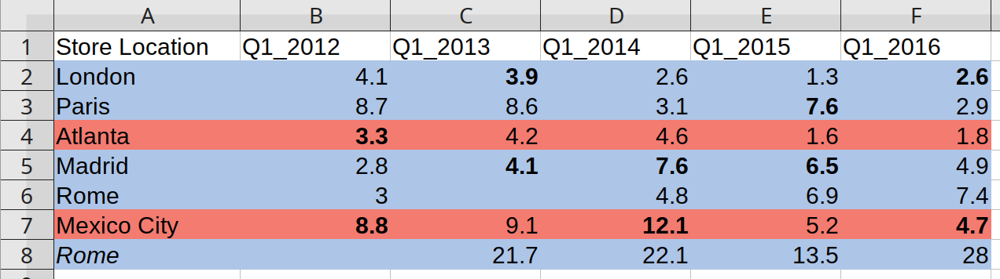

When we work with other people’s data, we often have to struggle through multiple unexpected steps before we get to a flexible, usable structure. Popular ways of structuring and presenting data can place content beyond the reach of code-based routines to tackle repetitive tasks efficiently.
Package functions
The functions in unheadr help us rework data shared by other people, from a human-readable structure to a tidier machine-readable structure on which we can perform common data manipulation tasks.
Data frames and tibbles
Here is how unheadr works with tibble and data frame objects that suffer from common issues such as:
- Embedded subheaders
- Broken values
- Merged cells and values wrapped within columns
- Broken rows
- Broken headers
Embedded subheaders are usually grouping variables embedded into another variable, used to show hierarchical data or create small multiples of data.
A simple example would be a coffee shop menu:
dat <- data.frame( drink = c( "Cold Drinks", "Soda", "Water", "Juice", "Lemonade", "Hot Drinks", "Tea", "Coffee" ), price = c(NA, 2.99, 1.99, 3.15, 2, NA, 3.99, 1.99), stringsAsFactors = FALSE ) dat #> drink price #> 1 Cold Drinks NA #> 2 Soda 2.99 #> 3 Water 1.99 #> 4 Juice 3.15 #> 5 Lemonade 2.00 #> 6 Hot Drinks NA #> 7 Tea 3.99 #> 8 Coffee 1.99
The beverage type is embedded in the ‘drinks’ variable. If we can match them with regular expressions, we can move the grouping values into their own variable using untangle2()
untangle2(dat, "Drinks$", drink, "beverage_type") #> 2 matches #> drink price beverage_type #> 1 Soda 2.99 Cold Drinks #> 2 Water 1.99 Cold Drinks #> 3 Juice 3.15 Cold Drinks #> 4 Lemonade 2.00 Cold Drinks #> 5 Tea 3.99 Hot Drinks #> 6 Coffee 1.99 Hot Drinks
Broken values usually happen when we’re pressed for space.
For whatever reason, the entries for the Barcelona 1992 and London 2012 Olympics are broken across two contiguous rows and NAs are used as padding in the other variables.
OGames <- tibble( Games = c("Los Angeles 1984", "Barcelona", "1992", "Atlanta 1996", "Sydney 2000", "London", "2012"), Country = c("USA", "Spain", NA, "USA", "Australia", "UK", NA), Soccer_gold_medal = c("France", "Spain", NA, "Nigeria", "Cameroon", "Mexico", NA) ) OGames #> # A tibble: 7 x 3 #> Games Country Soccer_gold_medal #> <chr> <chr> <chr> #> 1 Los Angeles 1984 USA France #> 2 Barcelona Spain Spain #> 3 1992 <NA> <NA> #> 4 Atlanta 1996 USA Nigeria #> 5 Sydney 2000 Australia Cameroon #> 6 London UK Mexico #> 7 2012 <NA> <NA>
In this case, we can use unbreak_vals() to ‘unbreak’ the lines in the ‘Games’ variable, matching the strings that start with numbers.
OGames %>% unbreak_vals("^[0-9]", Games, Games_unbroken, slice_groups = TRUE) %>% select(Games_unbroken, everything()) #> Warning: argument slice_groups is deprecated; extra rows and the variable with #> broken values are now dropped by default. #> # A tibble: 5 x 3 #> Games_unbroken Country Soccer_gold_medal #> <chr> <chr> <chr> #> 1 Los Angeles 1984 USA France #> 2 Barcelona 1992 Spain Spain #> 3 Atlanta 1996 USA Nigeria #> 4 Sydney 2000 Australia Cameroon #> 5 London 2012 UK Mexico
Wrapped columns often happen when we merge cells in spreadsheets or use table formatting in a word processor, resulting in empty or NA values used to pad all the vertical space.
knicks <- data.frame( stringsAsFactors = FALSE, player = c("Allan Houston", NA, "Latrell Sprewell", NA, NA), teams = c( "Pistons", "Knicks", "Warriors", "Knicks", "Timberwolves" ), position = c("Shooting guard", NA, "Small forward", NA, NA) ) knicks #> player teams position #> 1 Allan Houston Pistons Shooting guard #> 2 <NA> Knicks <NA> #> 3 Latrell Sprewell Warriors Small forward #> 4 <NA> Knicks <NA> #> 5 <NA> Timberwolves <NA>
We can unwrap the ‘teams’ values into a single string using unrwap_cols().
knicks %>% unwrap_cols(groupingVar = player, separator = ", ") #> # A tibble: 2 x 3 #> player teams position #> <chr> <chr> <chr> #> 1 Allan Houston Pistons, Knicks Shooting guard #> 2 Latrell Sprewell Warriors, Knicks, Timberwolves Small forward
This is more or less the opposite to separate_rows() from tidyr.
Broken rows have values of two contiguous rows broken up and padded with empty or NA values.
basketball <- data.frame( stringsAsFactors = FALSE, v1 = c( "Player", NA, "Sleve McDichael", "Dean Wesrey", "Karl Dandleton", "Mike Sernandez", "Glenallen Mixon", "Rey McSriff" ), v2 = c( "Most points", "in a game", "55", "43", "41", "111", "109", "104" ), v3 = c( "Season", "(year ending)", "2001", "2000", "2002", "2000", "2002", "2001" ) ) basketball #> v1 v2 v3 #> 1 Player Most points Season #> 2 <NA> in a game (year ending) #> 3 Sleve McDichael 55 2001 #> 4 Dean Wesrey 43 2000 #> 5 Karl Dandleton 41 2002 #> 6 Mike Sernandez 111 2000 #> 7 Glenallen Mixon 109 2002 #> 8 Rey McSriff 104 2001
In this case, we can match any value in any variable along the row that has broken values.
unbreak_rows(basketball, "^Most", v2) #> 1 match #> v1 v2 v3 #> 1 Player Most points in a game Season (year ending) #> 2 Sleve McDichael 55 2001 #> 3 Dean Wesrey 43 2000 #> 4 Karl Dandleton 41 2002 #> 5 Mike Sernandez 111 2000 #> 6 Glenallen Mixon 109 2002 #> 7 Rey McSriff 104 2001
Broken headers are variable names broken up across the first few rows.
vehicles <- data.frame( stringsAsFactors = FALSE, Vehicle = c(NA, NA, NA, "Truck", "Motorcycle", "Sedan", "Van"), Price = c("in","2014", "(local currency)","50000","44000","33000","50000"), Color = c(NA, NA, NA, "White", "Black", "Red", "White"), Emissions = c("Certificate", NA, NA, "TRUE", "FALSE", "TRUE", "TRUE") ) vehicles #> Vehicle Price Color Emissions #> 1 <NA> in <NA> Certificate #> 2 <NA> 2014 <NA> <NA> #> 3 <NA> (local currency) <NA> <NA> #> 4 Truck 50000 White TRUE #> 5 Motorcycle 44000 Black FALSE #> 6 Sedan 33000 Red TRUE #> 7 Van 50000 White TRUE
Here, the column names are broken. The top three rows (in addition to the column name) contain fragments of the name and should be mashed together column-wise.
The mash_colnames() function makes these many header rows into column names. The names are broken up across the top three rows, which goes in to the n_name_rows argument. Unlike other functions in unheadr, we provide the number of rows directly, rather than attempt any string matching.
mash_colnames(df= vehicles, n_name_rows = 3, keep_names = TRUE) #> Vehicle Price_in_2014_(local currency) Color Emissions_Certificate #> 4 Truck 50000 White TRUE #> 5 Motorcycle 44000 Black FALSE #> 6 Sedan 33000 Red TRUE #> 7 Van 50000 White TRUE
When importing data with broken headers into R, variable names are not always assigned from the values in top row, leaving us with automatically generated names (e.g. X1, X2, X3, etc.).
vehicles_skip <- data.frame( stringsAsFactors = FALSE, X1 = c("Vehicle",NA,NA,NA,"Truck", "Motorcycle","Sedan","Van"), X2 = c("Price","in","2014", "(local currency)","50000","44000","33000","50000"), X3 = c("Color", NA, NA, NA, "White", "Black", "Red", "White"), X4 = c("Emissions","Certificate",NA, NA,"TRUE","FALSE","TRUE","TRUE") ) vehicles_skip #> X1 X2 X3 X4 #> 1 Vehicle Price Color Emissions #> 2 <NA> in <NA> Certificate #> 3 <NA> 2014 <NA> <NA> #> 4 <NA> (local currency) <NA> <NA> #> 5 Truck 50000 White TRUE #> 6 Motorcycle 44000 Black FALSE #> 7 Sedan 33000 Red TRUE #> 8 Van 50000 White TRUE
In this case, the keep_names argument in mash_colnames() lets us ignore the object names when building new names from the first four rows of the data.
mash_colnames(df= vehicles_skip, n_name_rows = 4, keep_names = FALSE) #> Vehicle Price_in_2014_(local currency) Color Emissions_Certificate #> 5 Truck 50000 White TRUE #> 6 Motorcycle 44000 Black FALSE #> 7 Sedan 33000 Red TRUE #> 8 Van 50000 White TRUE
Lastly, the sliding_headers argument in mash_colnames can be used for tables with ragged names, in which not every column has a value in the very first row. In such cases, attribution by adjacency is assumed, and when sliding_headers = TRUE the names are filled row-wise. This can be useful for tables reporting survey data or experimental designs in an untidy manner.
survey <- data.frame( stringsAsFactors = FALSE, X1 = c("Participant", NA, "12", "34", "45", "123"), X2 = c("How did you hear about us?", "TV","TRUE","FALSE","FALSE","FALSE"), X3 = c(NA, "Social Media", "FALSE", "TRUE", "FALSE", "FALSE"), X4 = c(NA, "Radio", "FALSE", "TRUE", "FALSE", "TRUE"), X5 = c(NA, "Flyer", "FALSE", "FALSE", "FALSE", "FALSE"), X6 = c("Age", NA, "31", "23", "19", "24") ) survey #> X1 X2 X3 X4 X5 X6 #> 1 Participant How did you hear about us? <NA> <NA> <NA> Age #> 2 <NA> TV Social Media Radio Flyer <NA> #> 3 12 TRUE FALSE FALSE FALSE 31 #> 4 34 FALSE TRUE TRUE FALSE 23 #> 5 45 FALSE FALSE FALSE FALSE 19 #> 6 123 FALSE FALSE TRUE FALSE 24 mash_colnames(survey,2,keep_names = FALSE,sliding_headers = TRUE, sep = "_") #> Participant How did you hear about us?_TV #> 3 12 TRUE #> 4 34 FALSE #> 5 45 FALSE #> 6 123 FALSE #> How did you hear about us?_Social Media How did you hear about us?_Radio #> 3 FALSE FALSE #> 4 TRUE TRUE #> 5 FALSE FALSE #> 6 FALSE TRUE #> How did you hear about us?_Flyer Age #> 3 FALSE 31 #> 4 FALSE 23 #> 5 FALSE 19 #> 6 FALSE 24
Spreadsheets
unheadr also includes a function for flattening font and cell formatting in spreadsheet files into character strings in the corresponding cell.
Supported formatting:
- bold text
- colored text
- italic text,
- text with strikethrough
- underlined text
- double underlined text
- cell highlighting
One of the example files bundled with unheadr looks like this:

Font formatting and cell highlighting is being used to label an embedded grouping variable (meaningful formatting). The annotate_mf() function flattens the formatting into a character string describing the formatting. The hex8 code of the colors used for cell or text highlighting is also included.
example_spreadsheet <- system.file("extdata/dog_test.xlsx", package = "unheadr") annotate_mf(example_spreadsheet, orig = Task, new = Task_annotated) #> # A tibble: 11 x 3 #> Task Task_annotated Score #> <chr> <chr> <dbl> #> 1 Outdoor activities (bold, highlight-FFFFF200) Outdoor acti… 7.67 #> 2 Walks on a loose leash withou… Walks on a loose leash without pulling 7 #> 3 Walks without chasing bicycle… Walks without chasing bicycles, animals… 6 #> 4 Greets friends and strangers … Greets friends and strangers without ju… 10 #> 5 Home behavior (bold, highlight-FFFFF200) Home behavior 8.5 #> 6 Moves location when directed … Moves location when directed without gr… 9 #> 7 Does not rush through doorways Does not rush through doorways 8 #> 8 General social skills and obe… (bold, highlight-FFFFF200) General soci… 7 #> 9 Can play or interact appropri… Can play or interact appropriately with… 7 #> 10 Can be groomed or handled wit… Can be groomed or handled without squir… 8 #> 11 Stops barking on command Stops barking on command 6
To apply this approach to all cells in a spreadsheet, we call annotate_mf_all(). In this other bundled example file, negative values (first quarter losses) are indicated by bold.

example_spreadsheetb <- system.file("extdata/boutiques.xlsx", package = "unheadr") annotate_mf_all(example_spreadsheetb) #> # A tibble: 7 x 6 #> `Store Location` Q1_2012 Q1_2013 Q1_2014 Q1_2015 Q1_2016 #> <chr> <chr> <chr> <chr> <chr> <chr> #> 1 (highlight-FFADC5E… (highlight… (bold, hig… (highlight… (highlight… (bold, hi… #> 2 (highlight-FFADC5E… (highlight… (highlight… (highlight… (bold, hig… (highligh… #> 3 (highlight-FFF37B7… (bold, hig… (highlight… (highlight… (highlight… (highligh… #> 4 (highlight-FFADC5E… (highlight… (bold, hig… (bold, hig… (bold, hig… (highligh… #> 5 (highlight-FFADC5E… (highlight… (highlight… (highlight… (highlight… (highligh… #> 6 (highlight-FFF37B7… (bold, hig… (highlight… (bold, hig… (highlight… (bold, hi… #> 7 (highlight-FFADC5E… (highlight… (highlight… (highlight… (highlight… (highligh…
Character vectors
Tables from PDF or other similar sources can often be imported into R as character vectors with one element for each line. These can then be parsed as fixed width files or separated into columns. unheadr now includes the regex_valign() function for aligning elements in these vectors vertically by inserting padding whitespace (and optional separators) at positions along each line matched by a regular expression.
This example is based on how data on hotel guests (ID, State of Origin, and Date) in a PDF is parsed by pdftools::pdf_text.
guests <- unlist(strsplit(c("6 COAHUILA 20/03/2020 712 COAHUILA 20/03/2020"),"\n")) guests #> [1] "6 COAHUILA 20/03/2020" #> [2] "712 COAHUILA 20/03/2020"
There is inconsistent whitespace between the first and second data ‘columns’. With a regular expression that matches a word boundary and uppercase letters, we can adjust the whitespace so that the matched positions are the same across lines.
regex_valign(guests, "\\b(?=[A-Z])") #> [1] "6 COAHUILA 20/03/2020" #> [2] "712 COAHUILA 20/03/2020"
This output is easier to parse with readr or other data-munging approaches.
Further reading
The underlying reasoning, background, and possible uses of unheadr are described in this publication:
Verde Arregoitia, L. D., Cooper, N., D’Elía, G. (2018). Good practices for sharing analysis-ready data in mammalogy and biodiversity research. Hystrix, the Italian Journal of Mammalogy, 29(2), 155-161. Open Access, 10.4404/hystrix-00133-2018.